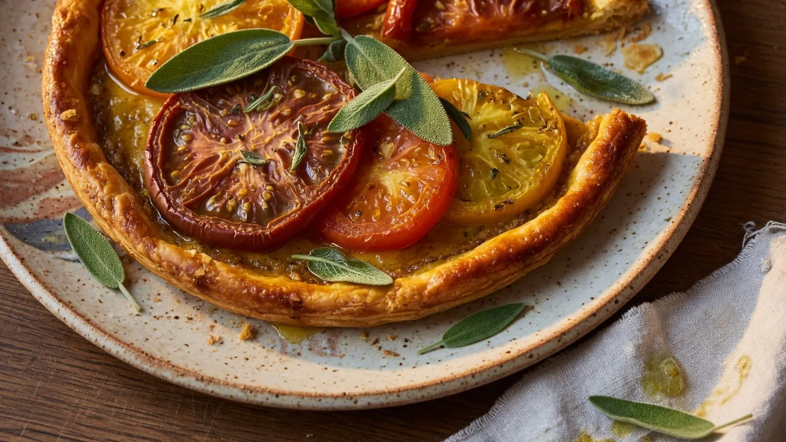

Entrées
01- Tarte fine tomate ancienne & sauge 14 € Pâte brisée, tomates du marché, huile d’olive, sauge fraîche
- Rillettes de truite fumée, pickles 13 € Truite fumée maison, cornichons acidulés, pain grillé
- Œuf parfait, comté 24 mois 12 € Jaune coulant, copeaux de comté, croûtons beurrés